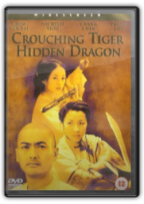
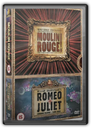
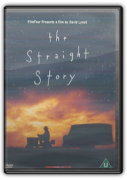
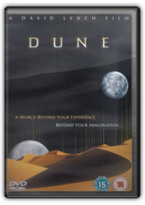
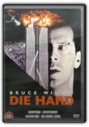
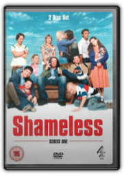
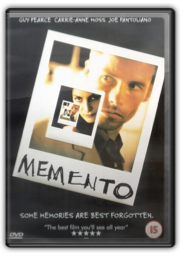
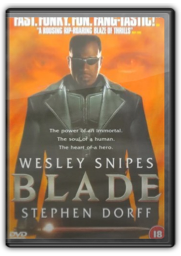
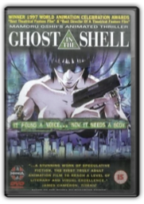

|

Crouching Tiger Hidden Dragon [2001]
Ang Lee

Crouching Tiger Hidden Dragonis so many things: an historical epic on a grand scale, an Asian martial-arts flick with both great effects andfantastic fighting (choreographed by The Matrix's guru Yuen Wo Ping), a story of magic, revenge and power played with a posse of star-crossed lovers thrown in for good measure. Set during the Qing dynasty (the late 19th century), the film follows the fortunes of righteous warriors Li Mu Bai and Yu Shu Lien (Asian superstars Chow Yun-Fat and Michelle Yeoh, respectively) whose love for one another has lain too long unspoken. When Li Mu Bai's legendary sword Green Destiny is stolen by wilful aristocrat's daughter Jen (exquisite newcomer Zhang Ziyi), who has been trained in the way of the gangster by Li Mu Bai's arch-rival Jade Fox, the warriors must fight to recover the mystical blade. The plot takes us all across China, from dens of iniquity and sumptuous palaces to the stark plains of the Western desert. Characters chase each other up walls and across roof and treetops to breathtaking effect, and Tan Dun's haunting, Oscar-winning East-West inflected score.

Moulin Rouge and Romeo + Juliet Double Pack [1996]
Baz Luhrmann
In a dazzling and yet frequently maddening bid to bring the movie-musical kicking and screaming into the 21st century, Baz Luhrmann's Moulin Rougebears no relation to the many previous films set in the famous Parisian nightclub. This may appear to be Paris in the 1890s with can-can dancers, bohemian denizens like Toulouse-Lautrec (John Leguizamo) and ribaldry at every turn, but it's really Luhrmann's pop-cultural wonderland, where everyone and everything is encouraged (in the third of Luhrmann's "red-curtain" extravaganzas, following Strictly Ballroomand Romeo & Juliet) to shatter boundaries of time and texture, colliding and careening in a fast-cutting frenzy that thinks nothing of casting Elton John's "Your Song" 80 years before its time. Still, there's something genuine brewing between costars Ewan McGregor and Nicole Kidman (as, respectively, a poor writer and his unobtainable object of desire), and their vocal talents are impressive enough to match Luhrmann's orgy of extraordinary sets, costumes and digital wizardry—-Jeff Shannon, Amazon.com

The Straight Story [1999]
David Lynch
Throughout The Straight Story, 73-year-old Alvin Straight (Richard Farnsworth) gazes calmly at the night sky, as if the stars were reflections of his own memories. When he hears his brother Lyle (Harry Dean Stanton), with whom he hasn't spoken in years, is ailing Alvin decides to go visit him and make peace. But since Alvin's eyesight is bad and his daughter (Sissy Spacek) refuses to drive him, he sets out on the 500-mile journey from Laurens, Iowa to Mt. Zion, Wisconsin on a John Deere lawnmower. It's slow going, so there's plenty of time to stop for the night and ponder the cosmos. Along the way, he befriends a variety of nice folks, and you have to ask yourself: is this really a David Lynch movie?

Dune [1984]
David Lynch
David Lynch's Dune is the brilliant but fatally flawed would-be epic feature film version of Frank Herbert's novel of the same name, the bestselling science fiction novel ever written. It is a complex but too heavily simplified version of a far more elaborate book, a darkly Gothic far future space opera revolving around an imperial, dynastic power struggle on the desert planet of Arrakis. With what was in 1984 an enormous $40 million budget, Lynch retained a surprising amount of the industrial/Victorian feel of his previous features, Eraserhead (1976) and The Elephant Man (1980), and was able to bring to the screen some of the most imaginative and awe-inspiring production designs, costumes and action then seen. Indeed, as a spectacularly atmospheric vision of the future Dune has as much to recommend it as the far more celebrated Blade Runner (1982), with which it even shares the female romantic lead, Sean Young—here just one star in a superb cast. The problem, which an unauthorised extended TV version failed to fix, is that Lynch's original vision of Dune was massively cut for length, and as such the final third is so rapidly paced as to undermine the superb first two thirds. A director's cut is sorely needed, the cinema version playing like a butchered masterpiece. Also available is an entirely unconnected four-and-a-half-hour mini-series, Frank Herbert's Dune (2000), which is less visionary but more coherent. 
Four-disc set includes: Episode IV, A New Hope(Special Edition)—with commentary by George Lucas, Ben Burtt, Dennis Muren and Carrie Fisher; Easter egg: credit roll (2 min)Episode V, The Empire Strikes Back(Special Edition)—with commentary by George Lucas, Irvin Kershner, Lawrence Kasdan, Ben Burtt, Dennis Muren and Carrie Fisher; Easter egg: credit roll (2 min)Episode VI, Return of the Jedi(Special Edition)—commentary by George Lucas, Lawrence Kasdan, Ben Burtt, Dennis Muren and Carrie Fisher; Easter egg: credit roll (2 min)Bonus disc: all-new bonus features, including the most comprehensive feature-length documentary ever produced on the Star Wars saga, and never-before-seen footage from the making of all three films |

Die Hard [1989]
John McTiernan
This seminal 1988 thriller made Bruce Willis a star and established a new template for action stories: "Terrorists take over a (blank), and a lone hero, unknown to the villains, is trapped with them." In Die Hard, those bad guys, led by the velvet-voiced Alan Rickman, assume control of a Los Angeles high-rise with Willis's visiting New York cop inside. The attraction of the film has as much to do with the sight of a barefoot mortal running around the guts of a modern office tower as it has to do with the plentiful fight sequences and the bond the hero establishes with an LA beat cop. Bonnie Bedelia plays Willis's wife, Hart Bochner is good as a brash hostage who tries negotiating his way to freedom, Alexander Godunov makes for a believable killer with lethal feet, and William Atherton is slimy as a busybody reporter. This film is exceptionally well directed by John McTiernan. —Tom Keogh

Shameless Series 1 [2004]
David Evans (II) Jim O'Hanlon Jonny Campbell Peter Lydon Mark Mylod

Memento [2000]
Christopher Nolan
An absolute stunner of a movie, Mementocombines a bold, mind-bending script with compelling action and virtuoso performances. Guy Pearce plays Leonard Shelby, hunting down the man who raped and murdered his wife. The problem is that "the incident" that robbed Leonard of his wife also stole his ability to make new memories. Unable to retain a location, a face, or a new clue on his own, Leonard continues his search with the help of notes, Polaroids, and even homemade tattoos for vital information. Because of his condition, Leonard essentially lives his life in short, present-tense segments, with no clear idea of what's just happened to him. That's where Mementogets really interesting; the story begins at the end, and the movie jumps backward in 10-minute segments. The suspense of the movie lies not in discovering what happens, but in finding out why it happened. Amazingly, the movie achieves edge-of-your-seat excitement even as it moves backward in time! , and it keeps the mind hopping as cause and effect are pieced together.

Blade [1998]
Stephen Norrington
The recipe for Bladeis quite simple; you take one part Batman, one part horror flick, and two parts kung fu, and frost it all over with some truly camp acting. What do you get? An action flick that will reaffirm your belief that the superhero action genre will never die. Bladeis the story of a ruthless and supreme vampire slayer (Wesley Snipes) who makes other contemporary slayers (Buffy et al.) look like amateurs. Armed with a samurai sword made of silver and guns that shoot silver bullets, he lives to hunt and kill "Sucker Heads". Pitted against our hero is a cast of villains led by Deacon Frost (Stephen Dorff), a crafty and charismatic vampire who believes that his people should be ruling the world, and that the human race is merely a food source. Born half-human and half-vampire after his mother had been attacked by a bloodsucker, Blade is brought to life by a very buff-looking Snipes in his best action performance to date. Apparent throughout the film is the fluid grace and admirable skill brought by Snipes to the many breathtaking action sequences that lift this movie into a league of its own. The influence of Hong Kong action cinema is clear, and you may even notice vague impressions of Japanese animesprinkled throughout. Dorff holds his own against Snipes as the menacing nemesis Frost, and the grizzly Kris Kristofferson brings a tough, cynical edge to his role as Whistler, Blade's mentor and friend. Ample credit should also go to director Stephen Norrington and screenwriter David S. Goyer, who prove it is possible to adapt comic book characters to the big screen without making them look absurd. Indeed, quite the reverse happens here: Blade comes vividly to life from the moment you first see him, in an outstanding opening sequence that sets the tone for the action-packed film that follows. From that moment onward you are pulled into the world of Blade and his perpetual battle against the vampire race. —Jeremy Storey

Ghost In The Shell [1995]
Mamoru Oshii
The skilful blending of drawn animation and computer-generated imagery excited animefans when this science fiction mystery was released in 1995: many enthusiasts believe Ghostsuggests what the future of animewill be, at least in the short term. The film is set in the not-too-distant future, when an unnamed government uses lifelike cyborgs or "enhanced" humans for undercover work. One of the key cyborgs is the Major, Motoko Kusanagi, who resembles a cross between the Terminator and a Playboy centrefold. She finds herself caught up in a tangled web of espionage and counterespionage as she searches for the mysterious superhacker known as "The Puppet Master." |

Liam Clancy
Collection Total:
1504 Items
1504 Items
Last Updated:
Jan 14, 2011
Jan 14, 2011


 Made with Delicious Library
Made with Delicious Library